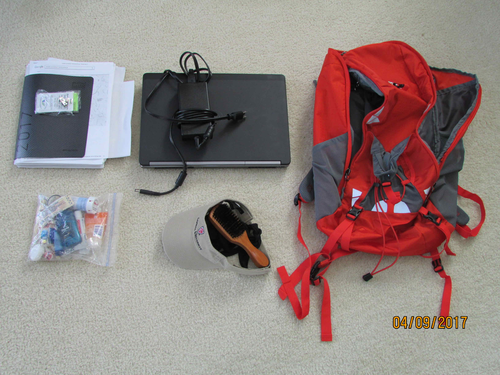
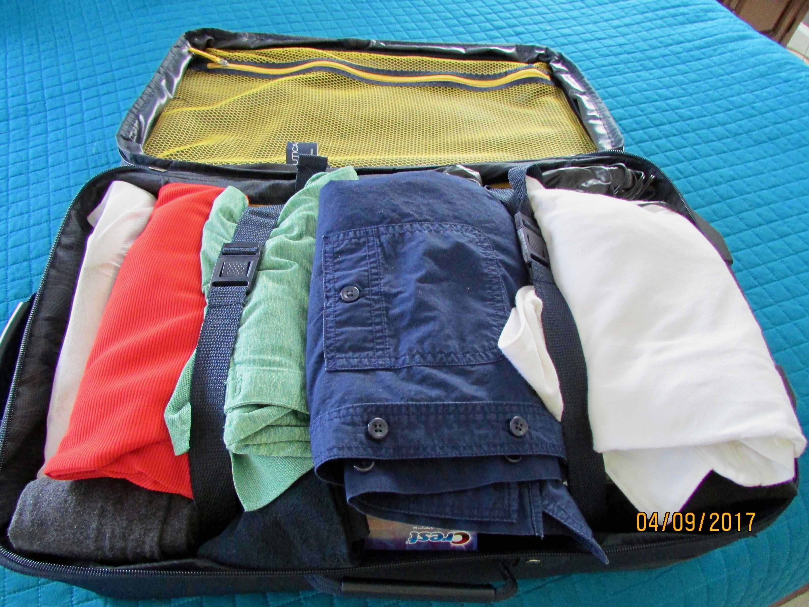
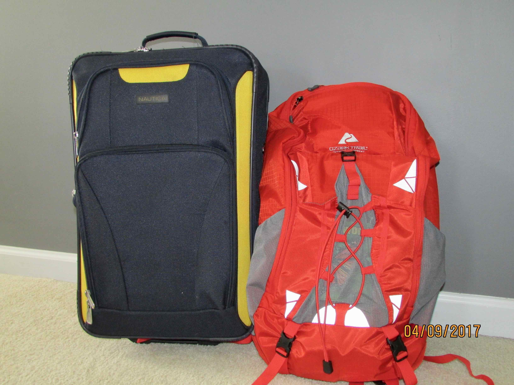
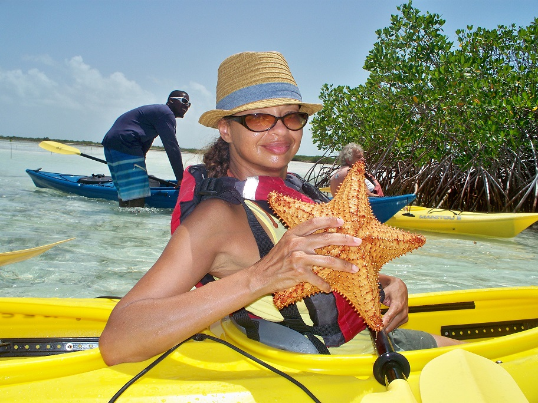
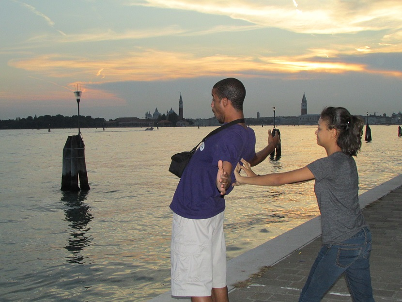

"When traveling the world there is no front or back door."
Plan Your Trip
Listen to Drake's "Passionfruit" to get you in the vacation planning mood.
Not sure where to go, how to pack or how to plan for your first international trip. Start here for tips to get you started.
Tip #1
As mentioned earlier, envision your vacation. Determine an amount of time based on the ideas you have in mind. This process should also help you decide or obtain a general thought of where you should go.
Tip #2
Conduct some research such as using the internet to explore locations and activities associated with what you want to do.
Tip #3
Develop a draft itinerary for your vacation and be sure to include how many people are attending, the mode of travel, the dates of the trip and the specific agenda of what you would like to accomplish.
Tip #4
If you're considering renting a house in a tropical destination then definitely plan ahead. On our last night in Phucket, Thailand we returned to the beach rental house to find an unwelcomed surprise. Here's what happened on our last night."
Packing Tips
Unless you're traveling to an extremly cold climate, you don't need a suitcase larger than 22" for a vacation lasting 1-2 weeks. The most popular sizes of carry-on luggage for U.S. domestic flights is 22" x 14" 9", or 45 linear inches. If luggage is limited and you do own suitcases larger than 22" then you should be able to pack for 2 people in that size and save on checked baggage fees. Below is an example of a 21" carry-on for a week long trip to a fall like climate.



Select A Destination
Not sure where you want to go first? Think about what you enjoy most...beach, adventure, ecotourism. The world has many unique destinations to offer with each offering something you've never experienced before.


Share Your Vacation
Our recommendation - don't share every highlight of your vacation while traveling. This is a red flag to anyone looking to commit a crime against you while you're away
How should you share your vacation memories? Use technology such as your smartphone, a traditional camera or even an action camera such as GoPro to highlight your favorite moments. Check out the power of technology!